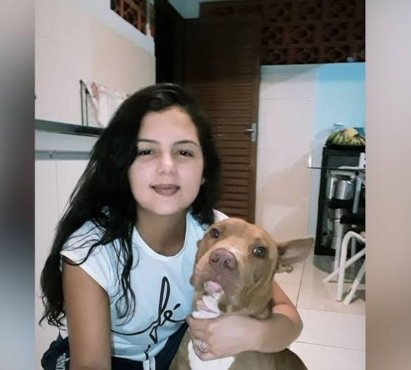

VÍDEO: Homem coloca rastreador em namorada, descobre traição e provoca acidente, no Paraná
Vídeo: RICtv
Um veículo, ocupado por um casal, se envolveu em um acidente na Rua São João, em Maringá, no Paraná. A colisão teria sido provocada pelo motorista de outro veículo. Ele era namorado da mulher que estava no veículo que bateu e descobriu que ela estava traindo ele após rastrear o celular dela.
O acidente aconteceu na noite do último sábado (11). O homem, desconfiado de que a namorada o traia, colocou um rastreador no aparelho celular dela. O rastreador apontou que a mulher estava em um motel, na Avenida Morangueira.
Ele esperou ela sair e viu que a mulher estava acompanhada de outro homem, que seria professor dela. O namorado então perseguiu o veículo em que o casal estava, provocando o acidente.
O carro em que o casal estava, um Peugeot, bateu em uma caçamba de lixo e em um poste, derrubando-o. Após o acidente, o namorado ainda desceu do carro e bateu no vidro do veículo em que estava o casal. Ele precisou ser contido por moradores da região.
O Serviço Integrado de Atendimento ao Trauma em Emergência (SIATE) foi acionado e levou a mulher para o hospital. Os dois homens envolvidos na confusão recusaram atendimento médico.
Veja também
Pit bull ataca e mata tutora dentro de casa em Cidade Ocidental GO
Uma mulher de 31 anos foi atacada pelo próprio cachorro da raça pit bull e acabou morta, na Cidade Ocidental (GO), cidade do entorno do Distrito Federal. O caso ocorreu na manhã do último domingo (13), no condomínio Parque Estrela Dalva.
VEJA MAISMenina de 6 anos morreu após buscar atendimento para crise de asma em hospital
Segundo a família, Maria Eduarda Ferreira da Silva morreu logo após receber uma medicação intramuscular. Ela deu entrada no hospital da Cidade Ocidental com dor forte no peito.
VEJA MAIS